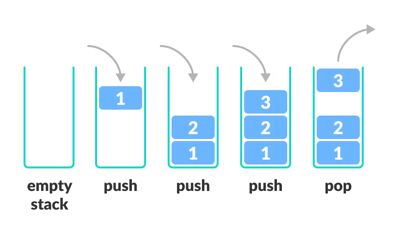

Stack
Stacks are data structures that can be visualized as... a stack of elements.
Elements are "pushed" onto the top of the stack and "popped" off the top.
Because of this, a stack is referred to as a "first-in-last-out" (FILO) data structure.

A stack interface
Here is a very simple stack interface.
These are stack methods IB recognizes.
Java's Stack
Java has a built-in implementation of a stack we can import. (documentation
here)
It provides a single no-argument constructor that creates an empty stack.
Let's use the push and pop method to add and remove elements from the stack.
isEmpty
The isEmpty() method lets us test if a stack is empty.
We can use this as a condition in a while loop to pop elements unitl a stack is empty.
peek
Java also gives us the peek() method which returns the element at the top of the stack without
removing it.
Reverse a String with a Stack
As practice, let's reverse a String using a stack.